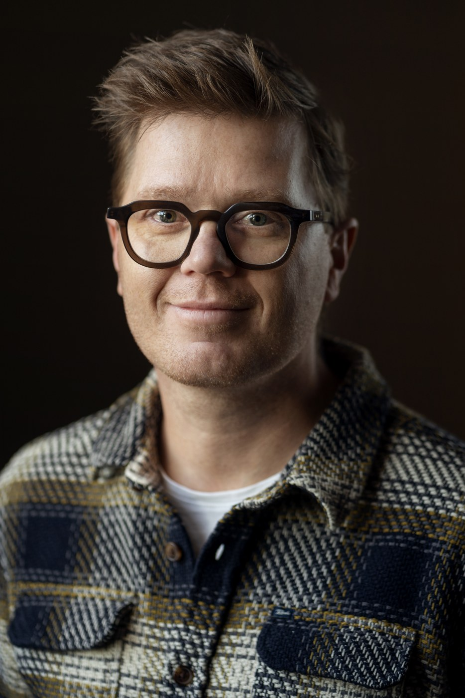

Past ecosystems
Recovering ancient environmental DNA to investigate past communities of plants and animals, from Arctic landscapes to lake sediments.
Geography · Genetics · Past ecosystems
I’m Mikkel Winther Pedersen, a geneticist, geographer and speaker studying the traces of life preserved in soil and sediments.
My research explores how ecosystems, climate and human activities have changed through time.

From sediment samples to genomic data, I work across field research and computational biology to investigate the living world of the past.
Recovering ancient environmental DNA to investigate past communities of plants and animals, from Arctic landscapes to lake sediments.
Exploring the relationships between human activity, biodiversity and environmental change in archaeological and natural archives.
Developing computational approaches for analysing ancient metagenomic data and sharing tools that support reproducible research.
Sawafuji et al. · Journal of Archaeological Science
Human DNA recovered from sediments at an open-air burial site in Japan expands the possibilities for studying past populations.
Zampirolo et al. · Philosophical Transactions B
Ancient DNA from sturgeon remains traces genetic diversity in the Danube over millennia, providing a historical perspective for conservation.
Zampirolo et al. · Current Biology
DNA in sediments reveals traces of domestic animals and sheds light on the history of herding and forest use in Central Europe.
Kjær, Pedersen, De Sanctis et al. · Nature
Two-million-year-old DNA reveals a lost ecosystem of plants and animals in a much warmer northern Greenland.
Wang, Pedersen, Alsos et al. · Nature
DNA from Arctic sediments reconstructs changes in plant and mammal communities over the past 50,000 years.
Pedersen et al. · Nature
Ancient DNA helps establish when the ice-free corridor could support people, shedding light on early migration routes into the Americas.
Palaeo-Environmental Genomics Group
Meet the people in my group.